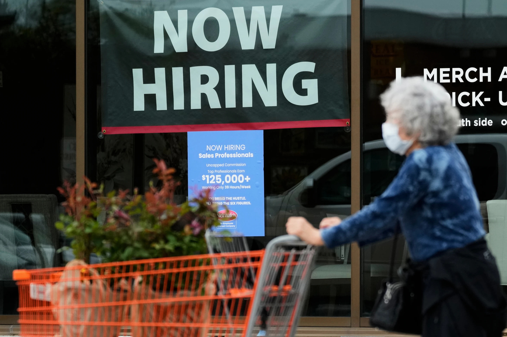

Friday, July 03, 2026
LIVE 7hrs ago
Hiring sign for sales professionals is displayed at a store, in Vernon Hills, Ill., Wednesday, April 15, 2026.


WASHINGTON — U.S. employers added just 57,000 positions last month, less than half the level in the prior month, an indication that companies still have a cautious economic outlook.
The Labor Department stated Thursday that the unemployment rate fell to a low 4.2% from 4.3% in May, although the dip was mainly because many people out of work stopped looking and no longer were recognized as unemployed.
The numbers imply companies are cautious about the state of the economy, with inflation at a three-year peak and consumer confidence close to post-pandemic lows. The employment market has been in a “low-hire, low-fire” rut where the employed have some job security with layoffs low, while those out of work are having a hard time getting hired. Spring’s robust hiring had encouraged optimism the economy was breaking free of that pattern, but Thursday’s report indicates job increases remain moderate.
“We’re in a market that’s still very fragile, and still vulnerable to shocks occurring,” said Nicole Bachaud, labor economist at ZipRecruiter, an online employment marketplace. “There's still a lot of hesitation on the part of employers and the workers themselves to do any moves. She pointed to other government figures showing corporations posting more jobs but not filling them.
Hiring is better than last year, when firms created fewer than 10,000 positions a month on average. That pace accelerated to 92,000 in the first half of this year. Yet substantial employment gains previously reported in April and May were revised lower, from 172,000 to 129,000 in May and from 179,000 to 148,000 in April.
Restaurants, bars cut jobs last month despite World Cup Restaurants, bars and hotels lost 61,000 jobs, a big disappointment for those hoping the World Cup event being held in several U.S. cities would bring at least temporary job improvements. Retailers cut another 7,500 positions.
“There are signs that consumers are pulling back on eating out, especially outside of higher-income households,” said Chad Moutray, chief economist at the National Restaurant Association. It’s a “K-shaped” economy in which wealthier households are faring better than middle- and lower-income ones.
“We continue to hear that a lot of Americans are struggling to get by,” he said. ‘If you’re catering to the top end of the K, you’re doing well. “We’ve had some issues over the last couple of months if you’re serving the lower end of the K.”
Moutray’s firm is predicting eateries will be hiring 450,000 seasonal workers this summer, a touch below last year’s 470,000.
“We hired about 1,500 summer employees this year, about the same as last year,” said Denise Beckson, a vice president of Morey’s Piers and Beachfront Water Parks in Wildwood, New Jersey. “But many restaurants and hotels are struggling with higher food costs and minimum wage increases which have limited their ability to hire,” she said.
“Costs continue to escalate, and one way to control that is to cut back on staffing,” she said.
Many Americans are concerned about the impact of artificial intelligence on jobs, yet for now, AI might be creating jobs. Among the professions that could be at risk from AI are architecture, engineering and software development. Professional and business services, which encompasses those fields, added 36,000 positions last month.
Construction firms added personnel, possibly due to AI buildout Manufacturers increased 3,000 jobs and construction firms added 11,000, giving blue-collar employment a slight boost.
Scottsville, N.Y.-based Power & Construction Group added some jobs as it works to meet demand for more electricity capacity in the state. The company’s vice president, Thomas “Murph” Murphy, said they are hoping to hire another 15-20 people after adding 47 in the past two months.
The company is looking for extra electricians, laborers and heavy equipment operators to add to the 350 people on staff, Murphy said.
Murphy said his company is competing with corporations building data centers in other states, not many of which are being built in New York, and he needs to try to convince young people to consider construction as a vocation. The company just created a training center to get its newer, younger workers up to speed.
“The grid can’t handle all the new power that everybody’s using,” Murphy said, citing the rise in laptops, phones and tablets in many American households. “We’ve got to keep building the grid. But that takes time.”
Jobs data might keep Fed on sidelines The report shows hiring and salary gains are not picking up fast enough to add to inflationary pressures in the economy, which might give the Federal Reserve room to leave its benchmark rate constant at its present level of roughly 3.6%.
Earlier, many Wall Street investors had anticipated the central bank would raise its benchmark rate this year as hiring appeared to be picking up. The possibility of no rate reduction helped send the stock market higher in mid-morning trade, with the broad S&P 500 index up 0.7%.
“The data released today is in the sweet spot for markets — strong enough to prevent growth worries from taking hold, but soft enough to lower the odds of a rate hike,” said Eric Winograd, chief U.S. economist at AB Global, an asset management business.
Fed chair Kevin Warsh said Wednesday in Portugal he would push inflation back to the Fed’s 2% objective, but would to comment on whether the Fed will raise rates at its next meeting, later this month.
Average salaries, meanwhile, jumped 3.5% from a year ago, a solid gain but one that still lagged inflation, leaving many Americans struggling to keep up with rising expenses for necessities such as food, petrol and housing.
Historically, an increase of merely 57,000 jobs would be viewed as weak. But with more Americans retiring and new immigration slowing drastically, the U.S. workforce has declined over the past year. Thus even improvements at that level are sufficient to keep the unemployment rate steady over time.”
Fewer Americans working or looking for work Indeed, last month, the workforce shrank sharply, as the share of Americans working or seeking for jobs fell to 61.5% from 61.8% in May. That’s the lowest level in 5 years.
Much of the reduction mirrored the aging of the population, with more than 10,000 Americans turning 65 each day and many people retiring. But the share of 25- to 54-year-old Americans who are working or looking for work dipped last month, too.